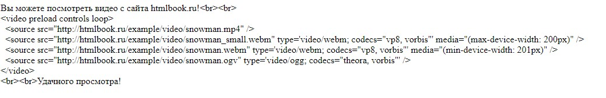

Преимущества их в том, что в отличие от картинок, на них можно вешать стилевые свойства -
Например увеличивать, задавать фон, наклонять, делать жирным и т.д.
Еще одно преимуществто - малый вес
icomoon - https://icomoon.io/app/
fontawesome иконки - https://fontawesome.com/
Заходим на страницу и нажимаем на start. Есть два способа как подключить.
Первый - регистрируемся, вводим свою почту, получаем на неё ссылку, вставляем ссылку в head и библиотека подключена.
Второй - более сложный, каким образом подключить файлы. Нажимаем внизу download. Далее загружаем на комп и распаковываем.
Заходим в папку css. После этого в папку allcss. Далее создаем такую папку в нашем папке кода и добавляем туда allcss, css min и папку со шрифтами.
Подключаем через link файл css all
Далее заходим в иконки, выбираем любую, копируем i и вставляем в код.
fontello - https://fontello.com/
иконки - http://fontawesome.io/cheatsheet/
preload - если длительная загрузка видео, то появляется значок загрузки.
controls - все эти значки внизу.
autoplay - когда заходим на страницу иавтоматически проигрывает видео.
loop - кгда проиграет видео до конца - начнет заново.
Поддержка: Chrome 31+, Firefox 31+, Opera 25+, IE 9+
Вставлять видео можно в разных форматах, это делается для кроссбраузерности. Для этого заранее оно готовится. Далее вставляем, и задаем ему кодики (codics) - для каждого формата разные.
Но, некоторые пользуются старыми браузерами, кторые могут вообще не поддерживать видео. Для этого можно прописать старый тег object.
Ну и если совсем уже древний браузер (один из первых), который не чиатет даже object, тогда можно написать, чт оскачать видео можно по ссылке и вставить через тег a
Если бывает такое, что на другом устройстве необходимо загрузить файл в другом размере (расширении), тогда можно подготовить заранее видео с нужным расширением.
И через медиа-запрос мы делаем ссылку на это видео. Т.е. если человек зайдет с устройства, где такое расширение максимально - то у него сработает медиазапрос и откроется видео в маленьком расширении.
Стилизовать это никак нельзя.
Кроссбраузерность и медиазапрос работают также, как и с видео.
Выглядит это следующим образом:
Делается аналогичным образом, как и видео. Используются такие же атрибуты
Вы можете прослушать аудио с сайта htmlbook.ru!Поддержка: Chrome 31+, Firefox 31+, Opera 25+, IE 9+
Самый лучший вариант - это загружать видео с ютуба.
Это лучше тем, что вы не можете загрузить какие-то противоправные видео. С ютуба обычно ивдео уже все правильные, кроссбраузерные, ничего запрещенного там не будет, т.к. на ютубе все проверяется при загрузке.
Как это сделать:
Заходим на ютуб, выбираем видео, нажимаем поделиться, затем на кнопку встроить, копируем код и вставляем в наш код.
frameborder - обводка, обычно 0. accelerometer - ориентация, например ландшафтная или р. autoplay - автоматическая загрузка.
Все элементы ютуба можно убирать, все кнопки надписи и прочее с помощью display none. Также можно стилизовать ширину, паддинги,как обычный тег.
Для чего они нужны. Например, google разработал какое-то интересное свойство, как display:flex. Браузер мозила тоже захотели себе это свойство, но конечно они его пишут
сами, и прописывают его по-другому или вообще на другом языке и называются mox-flex. И для кроссбраузерности, (чтобы вссе браузеры прочитывали это свойство) необхдимо прописывать
все его интерпретации. Так вот когда свойство становится популярным, многим разработчикам нравится, есть компания, которая все это стандартизирует - w3c.
Выделяется комада разработчиков. сидят и смотрят, что было классного в каждой интерпретации (для хрома, для оперы и т.д.) и делают один стандарт общий - flex.
Но для этого могут пройти годы, а нам нужно в коде прописывать все варинты. Поэтому есть такая программа - автопрефиксы - https://autoprefixer.github.io/ru/. Вводим нужное нам свойство - оно добавляет все автопрефиксы.
Есть еще сборщик программ(или кода). Если через автопрефиксы мы будем вручную все вводить и вставлять. то через сборщик программ - это все происходит автоматически.